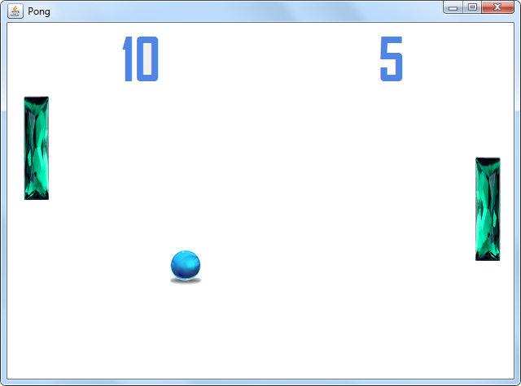

Domácí úkol - Pong
První počítačovou hrou na světě byl Pong firmy Atari (viz Wikipedia). Video můžete vidět třeba na Youtube.
Úkolem je tuto hru naprogramovat v Javě.
Není to o moc složitější než minulý Nemo. Podmínkou je mít program strukturovaný do metod a použít univerzální metodu na detekci kolize dvou labelů (viz lekce 09). Obecně platí, že každá metoda by měla mít jednu zodpovědnost a ta by měla být vyjádřena jejím jménem. Inspiraci o struktuře a pojmenování metod můžete čerpat níže:
private void priTiknutiCasovace(ActionEvent e) {
pohybujLevymHracem();
pohybujPravymHracem();
pohybujMickem();
if (detekujKolizi(labLevyHrac, labMicek)) {
odrazMicekOdLevehoHrace();
}
if (detekujKolizi(labPravyHrac, labMicek)) {
odrazMicekOdPravehoHrace();
}
if (micekJeVlevoMimoHraciPlan()) {
pridejBodyPravemuHraci();
}
if (micekJeVpravoMimoHraciPlan()) {
pridejBodyLevemuHraci();
}
}
private boolean detekujKolizi(JLabel label1, JLabel label2) {
// Vase implementace detekce kolizi
}
Nemusíte samozřejmě použít přesně tyto metody. Jde pouze o doporučení.
Můžete použít tuto grafiku:
| Míček | |
| Levý hráč | |
| Pravý hráč |
Pokud budete mít s úkolem jakýkoliv problém, využjte naši facebookovou skupinu, kde vám rádi poradíme.
Hotový úkol zabalte 7-Zipem s heslem czechitas včetně šifrování jmen souborů a zašlete ho Kamčovi (mně) a Hance emailem.